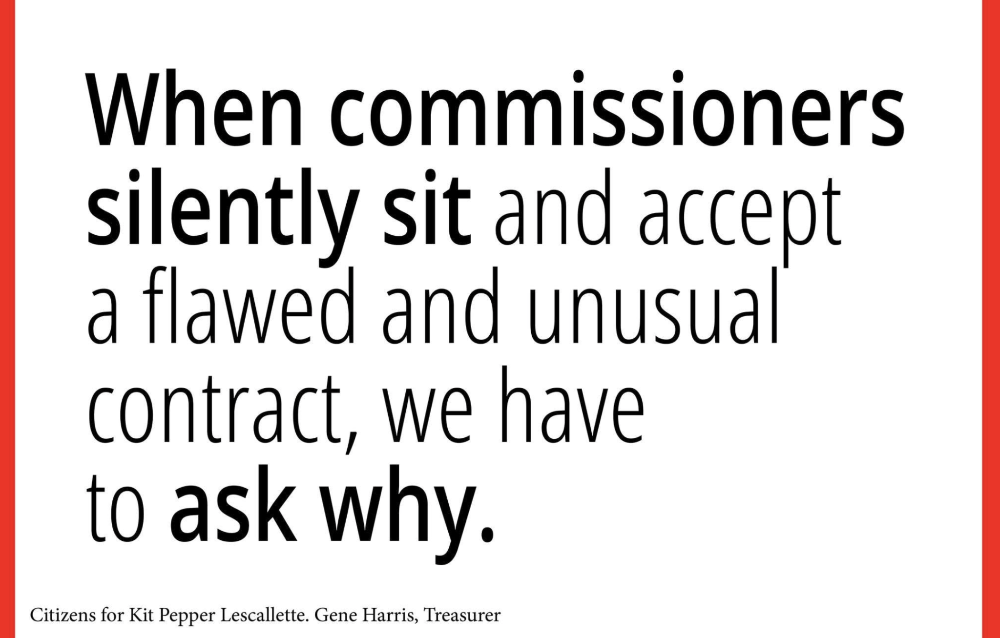

$4,029,329.75
Allegany County has already spent $4,029,329.75 preparing the site for a proposed 65-home development.

August 10, 2026
The housing deal at the Old Allegany High School site appears to be unlike any other D.R. Horton deal I have been able to find.
Allegany County has already spent $4,029,329.75 preparing the site for a proposed 65-home development.
a proposed 65-home development
That is approximately $61,990 in public site-development costs for every proposed house.
(NOTE: I am not counting demolition of the old school or other earlier expenses. This is simply the roughly $4 million spent on the residential site work — grading, roads, curbs, sidewalks, water and sewer infrastructure, electrical infrastructure, streetlights, landscaping and related improvements.)
The work is largely done. The public has paid the bill.
And let’s be clear — it’s ALL taxpayer money. It may not have come directly from our local property-tax bills, but it is still public money. County assets belong to the public, and grants come from public funds. Calling it a different “pot of money” does not make the cost disappear.
What do we get in return?
That is where this agreement deserves much more scrutiny than it has received. The commissioners certainly have not asked these questions of staff. At least not in public.
D.R. Horton is not contractually required to build 65 homes. In fact, the agreement does not require it to build any specific number of homes at all.
Nor does the agreement impose a meaningful timetable requiring the company to build out the development. D.R. Horton can make its decisions based on its own business interests and market conditions, while the County’s multimillion-dollar investment is already in the ground.
There is also nothing requiring the nearly $62,000-per-home public investment to benefit the eventual homebuyer through lower prices.
These are market-rate homes. There is no affordability requirement, no price limitation, and no provision requiring D.R. Horton to pass the value of the taxpayer-funded infrastructure on to purchasers.
The public pays to make the lots buildable. D.R. Horton decides when and how much to build, and the finished homes can be sold at market prices.
County staff has suggested that this is simply how these developments are structured.
In Baltimore’s 54-home Eager Landing project involving D.R. Horton, I identified at least $750,000 in state revitalization assistance — roughly $13,889 per home — and that project includes an affordable-housing component.
At the Old Allegany site, the public investment is approximately $61,990 per proposed home, with no affordability requirement.
At D.R. Horton’s Renn Quarter development in Frederick, the developer was required to provide millions of dollars in financial guarantees related to grading and public improvements. (Not get it done for free!)
And in a D.R. Horton-related development in Manassas Park, Virginia, the developer paid the city for land and agreed to an additional cash contribution.
Different communities negotiate different deals, of course. But those examples make it difficult to accept the idea that Allegany County’s arrangement is simply the standard way D.R. Horton developments work.
What our agreement appears to reflect instead is an economic development strategy in which the County assumes an extraordinary amount of the upfront cost and risk in hopes that the private developer will eventually invest.
And that is exactly the kind of policy decision our elected commissioners should be discussing publicly.
Yet that discussion has been almost entirely absent.
Where was the public discussion about whether $61,990 per proposed home is a reasonable public investment?
Where was the discussion about requiring a minimum number of homes?
Where was the discussion about a build-out deadline?
Where was the discussion about protecting the County if market conditions change and D.R. Horton decides to delay or scale back construction?
And where was the discussion about whether taxpayers spending nearly $62,000 per home should receive something in return in the form of more affordable housing?
Instead, the commissioners have largely received assurances from staff and approved the project with remarkably little public questioning or conversation at all.

That concerns me even more because this has not been a single negotiation followed by a signed agreement.
Earlier agreements remained unsigned while the County continued negotiating, and D.R. Horton’s position became progressively more favorable. Rather than using the absence of a signed commitment to insist on stronger protections for the public, the County continued giving ground.
The newest agreement has only been approved for a few days, so the fact that it has not yet been signed is not the issue. The issue is the history that brought us to this version — and how little the County ultimately requires in exchange for what it has already provided. (And now the agreement even requires the home purchasers to have an HOA.)
Allegany County has already invested more than $4 million — nearly $62,000 for every proposed home. D.R. Horton should be bringing a meaningful, enforceable commitment to the other side of that bargain.
I don’t see it in this agreement.
And I haven’t heard our commissioners publicly ask why. Actually, I have not heard them say anything about all this, except to vote yes.
At the very least they should be explaining why they are good with voting yes in the light of all these concerns.
(On my to do list for later....create transcripts of every discussion that the commissioners have had in public about this development since they awarded the bid and started the negotiation for the agreement. Anyone want to guess how many words it will include?)